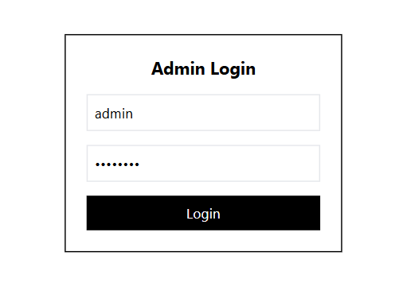
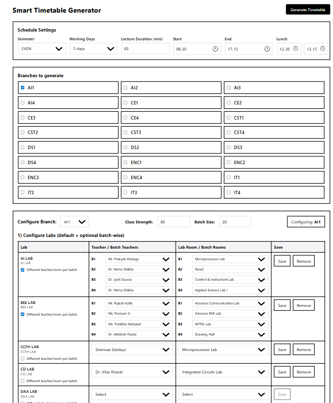
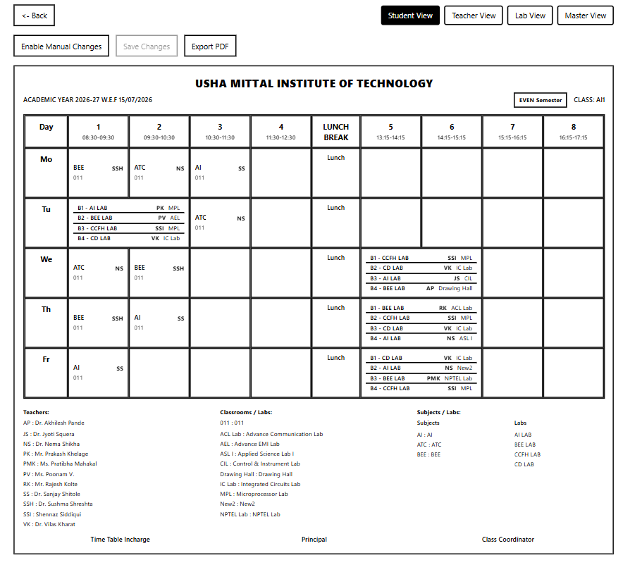
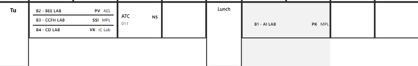
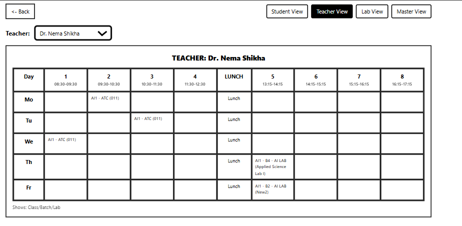
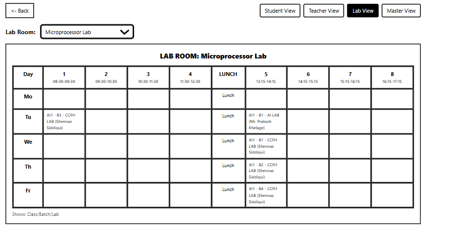
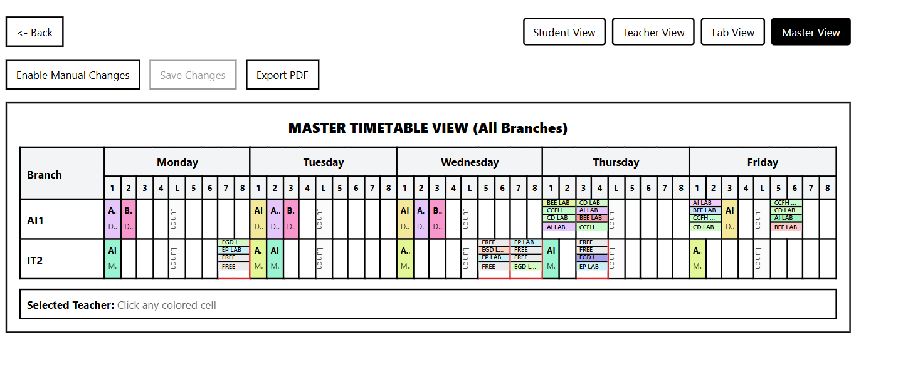

Smart Timetable Generator
Tech Stack:
React, TypeScript, Flask (API), SQLite, Rule-based Constraint Scheduling, Docker
Link to Project:
https://github.com/soumyadas9/smart_tt
(replace with deployed/demo link if available)
• Built a smart timetable generation system that automatically creates weekly academic schedules based on real-world constraints.
• Implemented a constraint-first scheduling engine handling labs, lecture rooms, lunch breaks, teacher availability, and conflict prevention.
• Designed batch-wise lab allocation (B1/B2/…) ensuring fair distribution and proper lab scheduling per batch per week.
• Developed a dynamic admin setup flow to configure branches, subjects, teachers, rooms, labs, class strength, and batch sizes before generation.
• Generated multiple timetable perspectives including Class View, Teacher View, and Room/Lab View for validation and coordination.
• Prioritized usability and reliability with clear validation feedback, predictable schedules, and fast re-generation on rule changes.
Project Images / Media







← Back